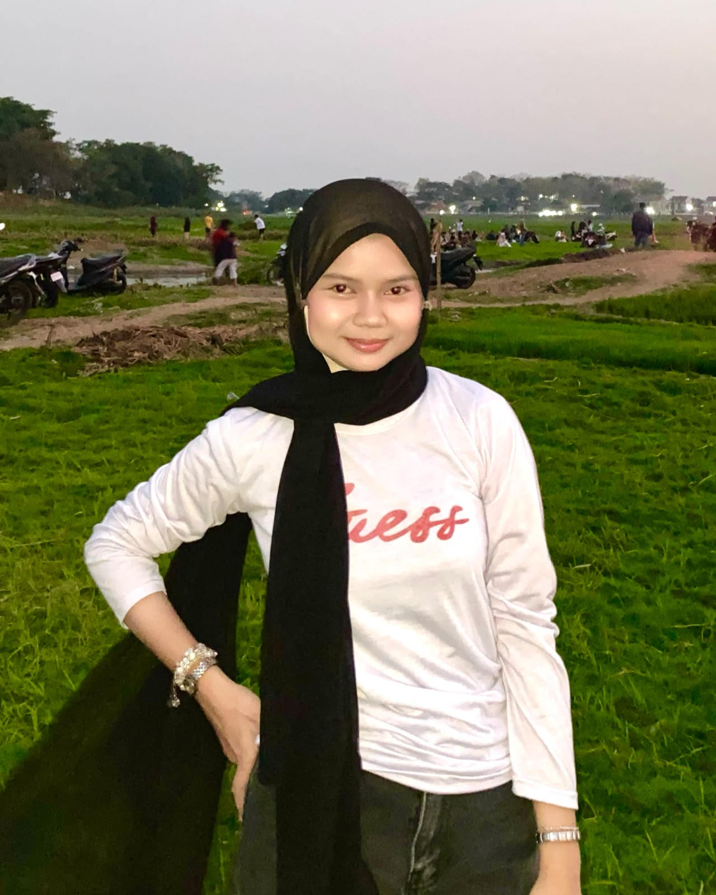

Adobe Photoshop
Pembuatan dan penyuntingan gambar
↗PORTOFOLIO PRIBADI 2026 / INDONESIA
Desainer Kreatif &
Mahasiswa Informatika
Halo! Saya Aprilia Dian, mahasiswa S1 Informatika yang memiliki ketertarikan pada dunia desain grafis, teknologi, UI/UX, dan pengembangan situs web.
Hubungi saya
DESAINSEKILAS TENTANG SAYA
01 / TENTANGSaya percaya desain yang baik bukan hanya terlihat menarik, tetapi juga membuat sesuatu terasa lebih mudah dipahami.
Berasal dari bidang Desain Komunikasi Visual dan kini mendalami Informatika. Saya tertarik menggabungkan desain dan teknologi untuk menciptakan karya digital yang menarik, kreatif, dan mudah digunakan.
Sukoharjo, Indonesia
S1 Informatika
ITB AAS Indonesia
Desain Komunikasi Visual
Desain grafis · UI/UX · Situs web
PERANGKAT & BIDANG
02 / KEAHLIANPerangkat dan bidang yang saya pelajari serta gunakan untuk mengembangkan ide. Bukan peringkat—setiap keahlian masih terus berkembang.
Pembuatan dan penyuntingan gambar
↗Vektor dan tata letak
↗Penyuntingan video
↗Pembuatan prototipe antarmuka
↗Komunikasi visual
↗Pengalaman digital
↗Dasar-dasar situs web
↗Belajar dengan praktik
↗DI LUAR LAYAR
03 / HOBIPUNYA IDE PROYEK?
05 / KONTAKPunya ide, ingin berkolaborasi, atau sekadar ingin menyapa? Kirim pesan—saya senang mendengar kabar darimu.
apriliadiana2708@gmail.com
SAPA SAYA
04 / SOSIALSapa saya
di media sosial.
Klik tautan untuk mengunjungi akun media sosial.